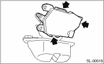

1. Remove the rear gate latch assembly. 
2. Disconnect the three claws, and then remove the rear gate latch lock actuator from the rear gate latch assembly.
CAUTION:
Do not apply excessive force to remove the actuator when removing it. This can deform the area around the rear gate latch assembly claws.
